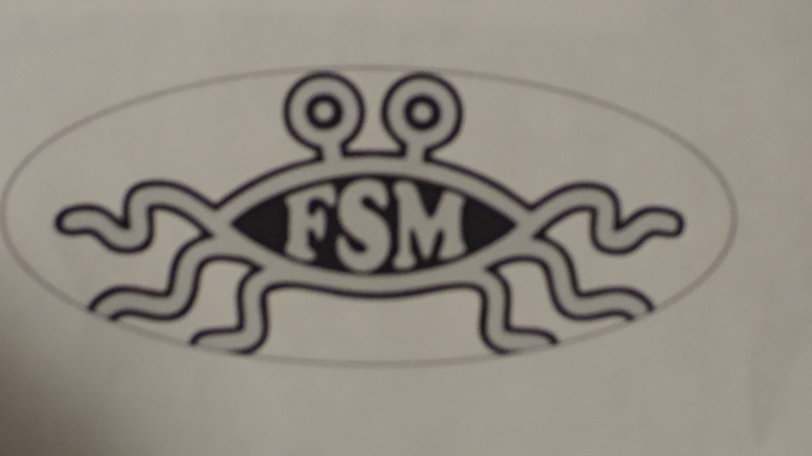

Here's my hog file. It's pretty good, I guess.
Here's my hog file. It's pretty good, I guess.
I also have the watery sticker, but make sure to not fry the vinyl cutter. ha...
This week we made stickers with corel draw. As usual with Corel Draw we imported the images we wanted into the program but this time we powerclipped images inside of a shape.
Then we matched the contour lines and used a vinyl cutter to cut them out.
I chose this spray from Overwatch as my sticker because I am a very spontaneous and as long as it fulfills the requirement, I'm happy.

To be totally honest with you, I think the spaghetti monster is pretty cool.
Oh wow! I really liked Avatar when I was younger so I felt compelled to make this sticker. This sticker in particular used the Roland Vinyl Cutter as it was black. That means something, I'm sure.

While on the topic of nerds, I made the Spirit Medallion from Ocarina of Time. This was made with corel draw. I imported the image and made little squares equidistant from the edges. Three different wood tiles were made, one empty tile with the mold and two tiles with the spirit medallion.

Later in the week we did milling and composites. I decided to use a mold of a sunflower from Plants vs. Zombies for my chocolate mold. I exported the file and then used the Roland CNC mill to drill out the image.
Here's my hog file. It's pretty good, I guess.
I also have the watery sticker, but make sure to not fry the vinyl cutter. ha...
{kind=link}